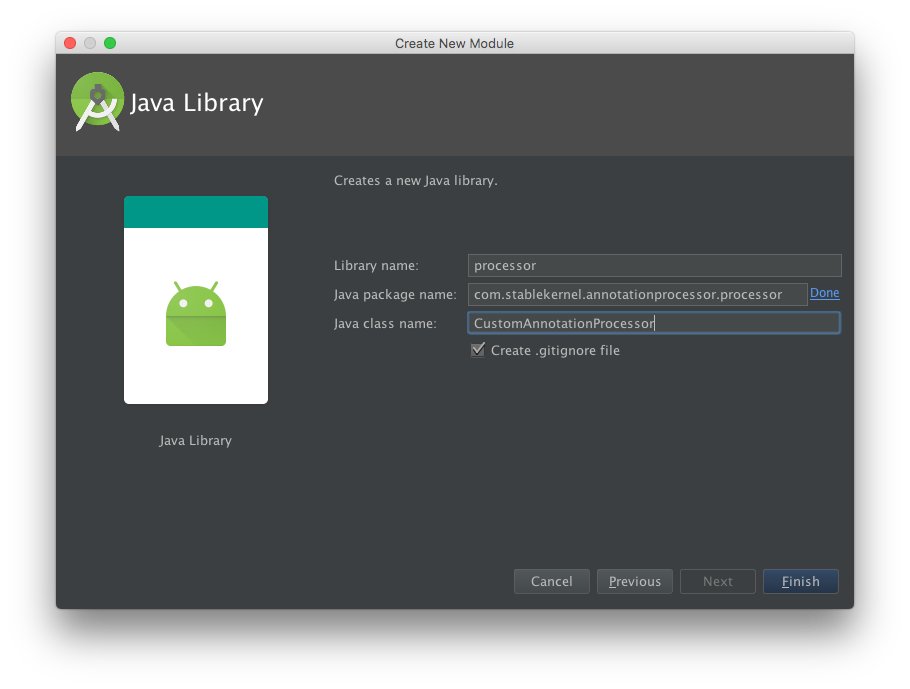
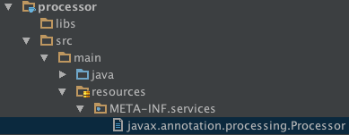

【翻译】 10步教你在Android中写"注解"处理程序
Table of Contents
前言: 之前一直很好奇怎么在Android中写"注解"处理程序. 因为毕竟跟Java程序还有些 区别, 后来在学习Retrofit 的过程中, 也抱着这个疑问看Retrofit的代码, 结果发现Retrofit主要是在Runtime中处理"注解", 这个其实跟Java程序是相同的 (本来Retrofit也是一个java库). 而像ButtferKnife这种程序, 都是在Compile阶段 就对"注解"进行了处理. 因为一直没时间学习这些开源库, 所以一直不知道怎么实现的. Google查资料的时候发现了这篇文章, 作者提供了一种写注解处理程序的方法, 写的很好, 并按照作者的教程做了实验. 终于把这个问题搞清楚了. 觉得这篇文章很好, 故翻译一下.
原文地址: http://blog.stablekernel.com/the-10-step-guide-to-annotation-processing-in-android-studio?success=true, 译文略有删减或补充.
翻译内容: 当业务时间搞一个测试库时, 我想如果使用注解建立一个"图状结构"应该会很有用, 就像Dagger在对象依赖中的作用那样. 但是我只写过"运行时"的注解处理程序.
于是我在网上读了很多关于"注解"的教程/博客/视频之后, 我已经掌握了了足够的信息 来建立我自己的注解处理器, 但是对于如何在Android上实现并没有一个完整的攻略. 因为注解处理是纯java的, 网上的教程都把"处理器"放在了自己的工程里, 但是我想让 "处理器"跟app的代码在同一个工程下(属于不同module), 这样当在编译app的时候会触发 编译"注解处理器".
注解是一个"元数据"类, 它可以绑定到"类/方法/域"上, 甚至是其他"注解"上. 这些元数据 可以在"运行时"通过反射的方法来处理. 或者在"编译时"通过注解处理器来处理. 注解处理器 是在Java 6中加入的一个有用接口,可以在编译时全面搜索所有注解, 并获取注解代表的信息, 这些信息包括那些元素"被注解修饰", 以及存储在注解中的额外信息. 注解和处理器直到最近 才被主流开发者深入探索. 包括:
- Jake Wharton做过一个很棒哒的深入注解的报告,关于注解的历史及在Dagger中的使用.
- Hannes Dorfman做过一个很棒哒的关于注解处理工作原理的报告.
开始之前
开始之前, 先说明一下如果使用注解处理程序.
当编译运行这段代码时, 首先, 一个预编译的gradle任务会把注解处理器会编译为一个java包, 并被自动包含到Android工程中. 然后, 编译过程会开始处理Android工程中的所有注解, 包括我们自定义的注解. 我们的注解处理器会创建一个可以在Android代码中使用的"类文件"对象. 这么做只是为了证明可以在编译时基于注解创建代码并在运行时使用.
在最开始定义好包结构很重要, 在后面如果为了修复错误重命名或者移动包, 可能会出问题. 本文中的程序归结为如下包名:
<base> => com.lx.androidexperiments <base>.processor => com.lx.androidexperiments.processor
该教程基于一个Hello World app, 并包含一个空activity, 可以使用android教程自己 创建一个这样的程序. 下面是构造注解处理器的过程.
1. 创建处理器模块
在app的工程里创建一个新的模块, 模块类型为Java Library. 模块名为"processor". 必须确保模块的包名为 <base>.processor, (<base>为app程序的包名). 如下图: .
2. 配置gradle
在app的build.gradle中加入如下代码:
compileOptions { sourceCompatibility JavaVersion.VERSION_1_7 targetCompatibility JavaVersion.VERSION_1_7 }在processor的build.gradle中加入如下代码:
sourceCompatibility = 1.7 targetCompatibility = 1.7
3. 创建注解类
在processor的包中创建注解类 LxAnnotation. 这里暂时把该类设为空类.
因为我们关心的重点为被注解的元素.
package com.lx.androidexperiments.processor; public @interface LxAnnotation { }
4. 创建处理器
处理器类需要继承 AbstractProcessor 类, 并要注明支持的所有注解类型的全路径
以及Java版本. 这里使用的是Java 7,如果要使用其他版本请注明. 如下代码:
package com.lx.androidexperiments.processor; import javax.annotation.processing.AbstractProcessor; import javax.annotation.processing.SupportedAnnotationTypes; import javax.annotation.processing.SupportedSourceVersion; import javax.lang.model.SourceVersion; @SupportedAnnotationTypes("com.lx.androidexperiments.processor.LxAnnotation") @SupportedSourceVersion(SourceVersion.RELEASE_7) public class LxAnnotationProcessor extends AbstractProcessor{ }
注:如果后面修改了注解类(LxAnnotation)的路径或名称, 需要在这里也更新一下.
不然会报编译错误.
实现该类的抽象函数 process():
@SupportedAnnotationTypes("com.lx.androidexperiments.processor.LxAnnotation") @SupportedSourceVersion(SourceVersion.RELEASE_7) public class LxAnnotationProcessor extends AbstractProcessor{ @Override public boolean process(Set<? extends TypeElement> annotations, RoundEnvironment roundEnv) { StringBuilder builder = new StringBuilder() .append("package com.lx.androidexperiments.generated;\n\n") .append("public class GeneratedClass {\n\n") // open class .append("\tpublic String getMessage() {\n") // open method .append("\t\treturn \""); // for each javax.lang.model.element.Element annotated with the CustomAnnotation for (Element element : roundEnv.getElementsAnnotatedWith(LxAnnotation.class)) { String objectType = element.getSimpleName().toString(); // this is appending to the return statement builder.append(objectType).append(" says hello!\\n"); } builder.append("\";\n") // end return .append("\t}\n") // close method .append("}\n"); // close class try { // write the file JavaFileObject source = processingEnv.getFiler().createSourceFile("com.lx.androidexperiments.generated.GeneratedClass"); Writer writer = source.openWriter(); writer.write(builder.toString()); writer.flush(); writer.close(); } catch (IOException e) { // Note: calling e.printStackTrace() will print IO errors // that occur from the file already existing after its first run, this is normal } return true; } }
上面的代码在生成的命名空间中(generated目录)创建了一个Java文件, 该文件有一个函数 getMessage(), 该函数会返回一个字符串. 从返回结果中可以看出被注解LxAnnotation修饰的元素名称. 在本文的例子中被修饰的是MainActivity类及onCreate函数.
@LxAnnotation public class MainActivity extends AppCompatActivity implements View.OnClickListener { @LxAnnotation @Override protected void onCreate(Bundle savedInstanceState) {
需要说明的, 是这是一个编译生成文件, 所以在编译成功之前, 你是看不到这个文件的. 编译成功后可以在 app/build/generated/source/apt/debug/<package>/GeneratedClass.java 看到该文件.
5. 创建"资源"
既然我们已经写好了处理器, 那么如何让Java使用它. 这需要创建一个Javax处理器文件, 编译器通过该文件来获取处理注解的信息. 步骤如下:
- 在processor模块下创建目录路径: resouces/META-INF/services.
- 创建文件 javax.annotation.processing.Processor.

在该文件中加入所有处理器的全路径.例如
com.lx.androidexperiments.processor.LxAnnotationProcessor
6. 添加android-apt
在工程的全局 build.gradle 中添加 android-apt 插件.
buildscript {
repositories {
jcenter()
}
dependencies {
classpath 'com.android.tools.build:gradle:2.1.2'
classpath 'com.android.databinding:dataBinder:1.+'
classpath 'com.neenbedankt.gradle.plugins:android-apt:1.8'
}
}
并在app的build.gradle中使用该插件:
apply plugin: 'com.android.application' apply plugin: 'com.neenbedankt.android-apt'
7. 建立依赖
本部分的主要内容是:
- 编译注解和处理器代码为一个jar包.
- 把jar包放入到app模块下并引用.
这个过程需要app编译之前完成(不然app编译会出错).
首先修改app的build.gradle, 添加对jar包的依赖.
dependencies { compile files('libs/processor.jar') testCompile 'junit:junit:4.12' compile 'com.android.support:appcompat-v7:23.1.1' }创建一个gradle任务, 将jar包从processor模块复制到app模块下. 并添加任务依赖, 使得该任务在processor的编译之后/app的preBuild过程之前执行.
task processorTask(type: Exec) { commandLine 'cp', '../processor/build/libs/processor.jar', 'libs/' } processorTask.dependsOn(':processor:build') preBuild.dependsOn(processorTask)
这样在app编译之前, libs目录下就已经有jar包了, 可以执行 ./gradlew :app:clean :app:build
验证一下.
8. 注解使用
前面讲过注解用在了activity类和onCreate函数上:
@LxAnnotation public class MainActivity extends AppCompatActivity implements View.OnClickListener { @LxAnnotation @Override protected void onCreate(Bundle savedInstanceState) { super.onCreate(savedInstanceState);
不过在使用注解之后, 如果要验证 GeneratedClass.java, 需要重新编译 app模块. 可以看到生成的文件内容如下:
public class GeneratedClass { public String getMessage() { return "MainActivity says hello!\nonCreate says hello!\n"; } }
9. 使用生成的类GeneratedClass
可以通过在app模块中添加调用生成类(GeneratedClass.java)的代码来验证 注解整个流程是否打通.
private void showAnnotationMessage() { GeneratedClass generatedClass = new GeneratedClass(); String message = generatedClass.getMessage(); // android.support.v7.app.AlertDialog new AlertDialog.Builder(this) .setPositiveButton("Ok", null) .setTitle("Annotation Processor Messages") .setMessage(message) .show(); }
因为在编译完成之前GeneratedClass并不存在, 所以只有注解处理的整个 流程都工作正常, 这个类才会出现, app模块也才会编译成功.
OK, 上面就是在编译时进行注解处理的一种方法.